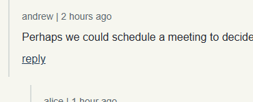
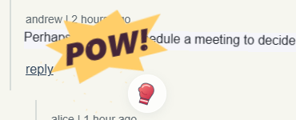
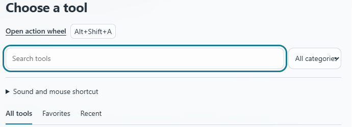
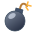
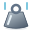

A field guide / 14 November 2026
Temporary tools for ordinary webpages
Punch a comment, scatter a paragraph or move a spotlight across a webpage. Anger Relief Toy adds eighteen temporary visual tools to the tab you are reading. These are local illustrations, not replies or reactions sent to other people, and are not intended to change the website's saved content.
Project release 0.0.3 / 18 tools
Chromium-based desktop browsers
Manual installation
· Unpacked build for review
73.9 kB ZIP, extension only. Extract it, then load the extracted folder through your browser's Extensions page. This is not a store installation.


What using it involves
Open the extension on an ordinary webpage and choose a tool. Element tools respond to a deliberate primary-pointer click. Punch and Text Bomb remain equipped after an animation finishes: point at another target and use them again, without returning to the popup.
- Switch
- opens tool selection.
- End effect
- stops the current visual result, but keeps the tool equipped. It stays visible and disabled when idle.
- Put away
- clears equipment, effects and their temporary interface.
Document and viewport tools start when selected. Reselect one to restart it after End effect. Escape closes an open menu first; otherwise it puts the tool away. Closing a menu is not the same as ending an effect.
Drag the action dial's rim to reveal more tools, or browse with arrow keys and select with Enter. All tools opens the searchable catalog with categories, Favorites and Recent. Its title bar lets you move the on-page window aside.
The popup's Open action wheel control opens this rotating dial. Beside it, the extension shows the shortcut actually assigned by the browser. Alt+Shift+A is suggested, not guaranteed; it was initially unassigned in the fresh verification profile.
Sound is optional, with local synthesized cues, a master volume initially set to 20%, mute, and separate effect and dial-sound switches. Flashlight uses a short activation cue rather than a pointer-following sound loop. Visuals can continue if the browser blocks audio.





What is in the collection
The current build enables eighteen tools. Some act on one target; others illustrate several visible elements or cover the viewport. These are bounded visual effects, not a physical reconstruction of the whole webpage.
The groups below are an editorial guide, not the catalog's exact category labels. Katamari Collector and Web Spider remain research candidates, not available tools.


- Impact & deformation
- Punch adds a comic impact; Rubber gives a target an elastic wobble; Wrecking Ball stages a pendulum strike.
- Fracture & breakup
-
Shatter
drops fragments of a target;
Screen Crack
overlays the viewport;

Text Bomb scatters words after a fuse; Disintegrate breaks a surface illustration into drifting tiles. - Motion & perspective
-

Gravity drops bounded representations of visible content; Vortex pulls a target inward; Page Dance moves several elements; Depth Page adds pointer-responsive layered perspective. - Surface & environment
- Burn the Page chars a selected target, not the whole page; Television Glitch offsets target bands; Color Splash adds paint; Celebration Cannon releases confetti around a target; Snowfall and Matrix Rain add viewport fields.
- Lighting
- Flashlight follows the pointer and stays active until ended, switched or put away.
How the three versions differ
The progression is mainly about continuity: first establish individual effects, then keep a tool ready, then improve control stability, sound and collection navigation. Older folders preserve those decisions; they are historical context, not competing default downloads.
0.0.1 / v001
The eight-tool foundation
Eight effects, a searchable catalog and the initial action wheel established the extension framework. Activations were short-lived, with automatic restoration and an Again control for another use.
0.0.2 / v002
Keeping a tool equipped
Persistent equipment, inventory and cursor cues made repeat use possible. The interface became lighter, shortcut guidance became visible, and the on-page catalog became centered and movable. The circular mouse gesture remained a separate prototype.
0.0.3 / v003 · Current
A larger, navigable collection
Ten additions bring the total to eighteen. The inventory reserves three controls; shared audio, a rotating full-collection dial and opt-in stationary middle-button hold are integrated. Custom Tab/Enter page targeting was removed; menu keyboard controls remain.
This page uses project release labels 0.0.1-0.0.3. The v003 browser manifest reports 0.3.0. The earlier manifests report 0.1.0 and 0.2.0 respectively. The archived builds have not been relabeled.
Install the current build
Use a Chromium-based desktop browser that permits unpacked
extensions. Extract the ZIP into its own folder first. Select the
folder that directly contains manifest.json, not the
ZIP itself. No Bun or development tools are needed.
Google Chrome
-
Type
chrome://extensionsin the address bar. - Turn on Developer mode, then choose Load unpacked.
-
Select your extracted extension folder containing
manifest.json. If using the complete project instead, select2026-11-14-anger-relief-toy-v003/dist. - Open an ordinary webpage and click Anger Relief Toy in the Extensions menu. Pinning its toolbar icon is optional.
Microsoft Edge
-
Type
edge://extensionsin the address bar. - Turn on Developer mode, then choose Load unpacked.
-
Select your extracted extension folder containing
manifest.json. From the complete project, select2026-11-14-anger-relief-toy-v003/dist. - Open an ordinary webpage and launch Anger Relief Toy from Edge's Extensions menu or its pinned toolbar icon.
Other Chromium-based desktop browsers
Use the browser's Extensions manager and equivalent
unpacked-extension controls, if available. Select the
extracted folder containing manifest.json. Menu
names, shortcut assignments and policies may differ. A
Chromium foundation does not establish that this extension has
been verified in that product. Firefox and Safari are outside
the project's supported scope.
Choose a tool in the popup, or assign the dial command through your browser's extension keyboard-shortcut settings. Start on an ordinary article or the supplied synthetic discussion page. Settings pages, extension stores and other protected pages may reject activation.
Keep the extracted folder in place. To update, load or reload the current build in the extension manager, then refresh open pages. Remove the extension through that manager when finished. A managed browser may prohibit developer installation; follow its administrator's policy.
Installation references: Google's unpacked-extension guide · Microsoft's sideloading guide. Browser-internal addresses above are copyable text, not website links. Local-file demonstrations require the browser's separate file-access permission; a normal HTTP page does not.
Useful boundaries to know
Effects illustrate page backgrounds and text. They do not reproduce every image, embedded application, video or complex layout. Some deliberately cover or distort content while active. Put away is the direct return to normal interaction; scrolling or resizing can end a target illustration.
The optional middle-mouse shortcut opens the dial after a stationary 1.8-second hold. It is off by default and applies only after activation in that tab. On eligible noninteractive areas, enabling it replaces native middle-button autoscroll or paste. Links, fields and controls are excluded by design; platform-specific behavior still needs broader testing.
Privacy: the inspected implementation renders
and synthesizes sound locally, without an account or external
runtime service. Its permissions are activeTab,
scripting and storage, rather than
persistent access to every site. Favorites and preferences stay
in browser-local extension storage. This is a design boundary,
not a guarantee against every host-page interaction.